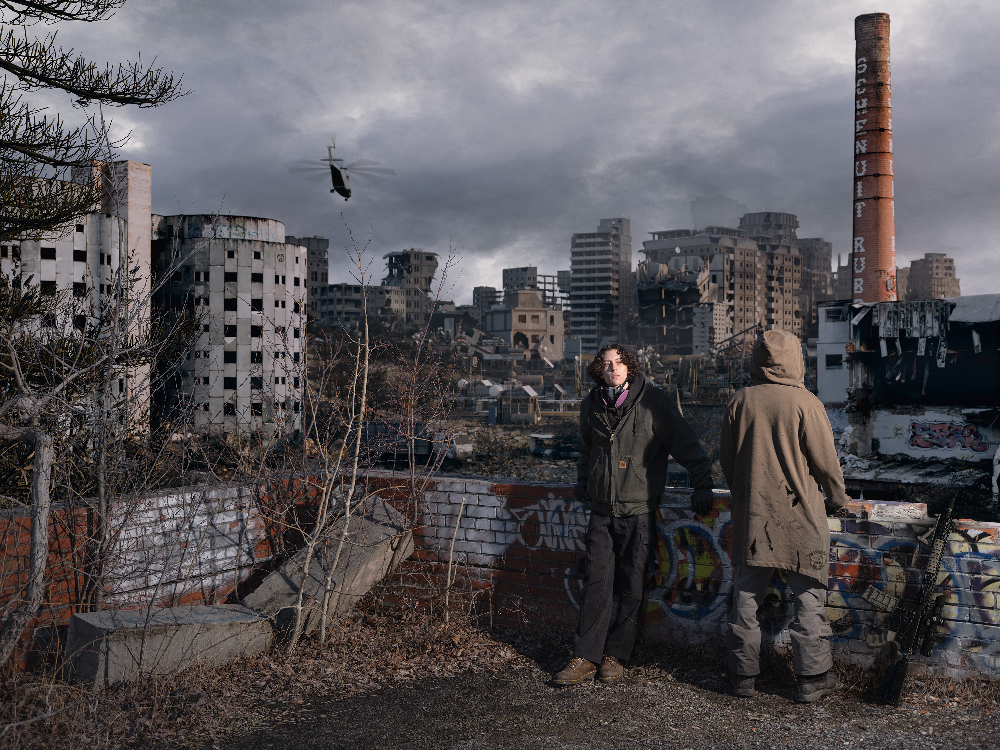
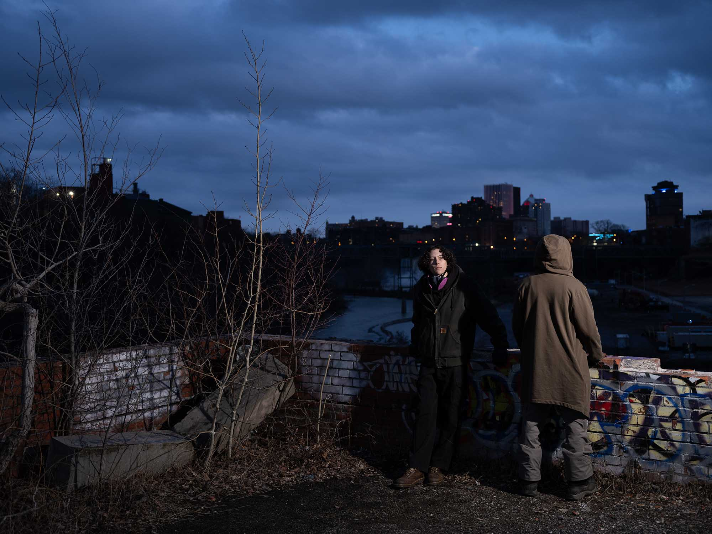

INCINERATED
OVERVIEW
Blender / Gaea / CloudCompute / Photoshop / Houdini - 2024
Incinerated depicts a post-apocalyptic city based off of real world Rochester NY. The project was a collaboration between photographers Eddie Garcia, Eli Melet and I. We wanted to convey a world that was worn by war, and destroyed around us. Eli & Eddie developed the concept and direct the shoot with on set help from artist Kendall Dirks and I. For the set extension, OpenStreetMap and public LiDAR data were used to rebuild geographically accurate landmass and city layout which was processed in CloudCompute, Houdini and Gaea. The environment was made of KitBash3D assets with photogrammetry scans of abandoned buildings. Assembly and rendering was finished in Blender, while compositing was done by Eli Melet in photoshop.

